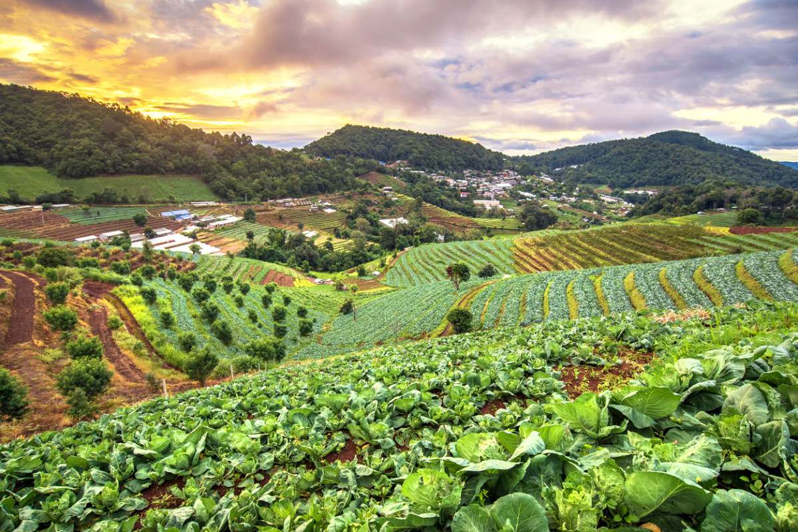

ABOUT US

Coltivare started with a simple idea: give farmers the right tools, and they'll feed the world. We're a company built by people who know the land. Those who've worked it, relied on it, and understand what it takes to keep it thriving.
Our products and services are designed to do more than just grow crops. They support the modern farmer in the ever-changing landscape of agriculture all while keeping sustainability front and center. Whether it's a family-run farm or a large operation, we work to make farming more efficient and resilient, yet still accessible to all who work to keep the world fed.
At Coltivare, we operate under our three core values:
- Honesty
- Dependability
- Sustainability
Simply put, Coltivare runs on a promise to support our farmers in the most honest, dependable, and sustainable ways.
OUR HISTORY
Coltivare was founded in 1805 by Indiana native John Smith. A farmer since birth, he grew up with a passion for agriculture and a family that needed fed.
As he took over his family's farm, he became known by the locals as "The Harvest Guy," as his innovative farming techniques brought plentiful harvest year after year.
Knowing that he could create an impact, John started Coltivare as a way to share his passion for agriculture with farmers worldwide. Since 1805, Coltivare has expanded
into a global agriculture powerhouse, offering products and services for all farmers - rooted in good old fashioned farming.
OUR TEAM
Stefani Germanotta
CEO
Stefani has served as the CEO of Coltivare since 2015.
Her passion and expertise for sustainability keeps Coltivare
a driving force in agriculture innovation. Read about her achievements here.
 Ryan Reynolds
Ryan Reynolds
CFO
Ryan has served as the CFO of Coltivare since 2019.
His knowledge in agriculture finance and experience at Well Fargo has pushed Coltivare
forward in its mission of keeping only the best products and services accessible to farmers.
Andy Samberg
CHRO
Andy has served as the CHRO of Coltivare since 2017.
His approachable and professional personality makes him a great fit for Coltivare's
amazing staff, making sure everyone on the team is taken care of.
Owen Wilson
COO
Owen has served as the COO of Coltivare since 2021.
His organized and practical methods have done wonders at Coltivare,
ensuring the company continues to grow and break boundaries.
Though these are the officers for our core teams, we have many teams at Coltivare, including:
- Transportation
- Procurement
- Quality
- Customer Support
... and many more!
The only thing we're missing is you!
Ready to join the Coltivare team? Download a job application here!
Questions, comments, or ready to apply? Email the hiring manager at Coltivare below!
Email Aidan